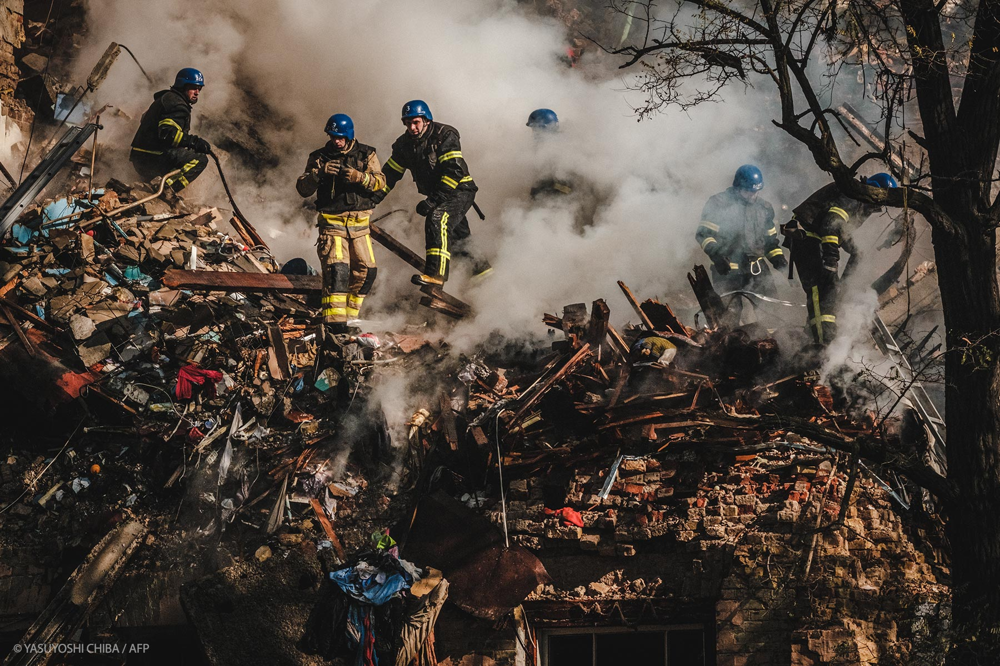

European Parliament declares Russia to be a state sponsor of terrorism
Following the atrocities carried out by Vladimir Putin’s regime against Ukrainian civilians, MEPs have recognised Russia as a state sponsor of terrorism.
On Wednesday, Parliament adopted a resolution on the latest developments in Russia’s brutal war of aggression against Ukraine. MEPs highlight that the deliberate attacks and atrocities committed by Russian forces and their proxies against civilians in Ukraine, the destruction of civilian infrastructure and other serious violations of international and humanitarian law amount to acts of terror and constitute war crimes. In light of this, they recognise Russia as a state sponsor of terrorism and as a state that “uses means of terrorism”.
Facts in detail
- Russia is committing war crimes and uses “means of terrorism”
- MEPs call for the further international isolation of Russia
- Close and ban Russian state-affiliated institutions in the EU spreading propaganda
- The ninth EU sanctions package against Moscow must be completed